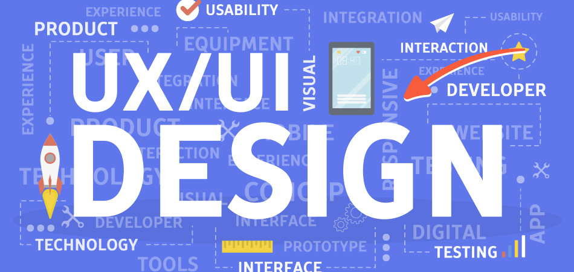

The user interface (UI) is the space where interactions between humans and machines occur. UI is an integral aspect of user experience (UX) that consists of two major parts: visual design, which conveys the look and feel of a product; and interaction design, which is the functional and logical organization of elements. The goal of user interface design is to create a user interface that makes it easy, efficient, and enjoyable for users to interact with a product. Learn about the different types of UI as well as fundamental design requirements for each type.
 What is ui developer role? A UI developer's role is to translate creative software design concepts and ideas into reality using front end technology. They understand the user interface design solution both in its practical intent and creative vision, and convert it into engineered softwares.
What is ui developer role? A UI developer's role is to translate creative software design concepts and ideas into reality using front end technology. They understand the user interface design solution both in its practical intent and creative vision, and convert it into engineered softwares.

UI design prioritizes the user’s visual experience. A good user interface is functional, reliable, and enjoyable to use. User interface design should minimize the effort that the user has to invest interacting with a product and help users accomplish their goals with ease.
Designers use methods of user-centered design (user interviews, direct observations, etc.) to learn about their target audience and ensure that the visual language they introduce in the UI is well-tailored to them. It’s important to make the UI aesthetically
.jpg) First things first: What do UX and UI actually mean? The people you have eavesdropped on are actually discussing two professions that, despite having been around for decades, and in theory for centuries, have been defined by the tech industry as UX and UI design.
UX design refers to the term “user experience design”, while UI stands for “user interface design”. Both elements are crucial to a product and work closely together. But despite their professional relationship, the roles themselves are quite different, referring to very different aspects of the product development process and the design discipline.
First things first: What do UX and UI actually mean? The people you have eavesdropped on are actually discussing two professions that, despite having been around for decades, and in theory for centuries, have been defined by the tech industry as UX and UI design.
UX design refers to the term “user experience design”, while UI stands for “user interface design”. Both elements are crucial to a product and work closely together. But despite their professional relationship, the roles themselves are quite different, referring to very different aspects of the product development process and the design discipline.